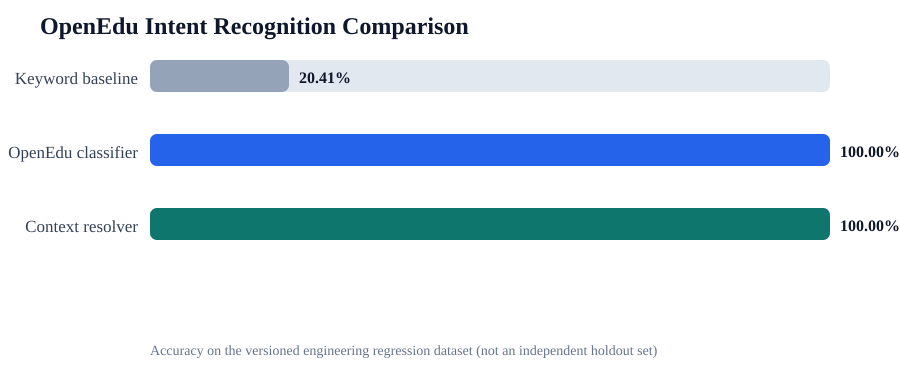

OpenEdu · Reproducible Evidence
论文实验与答辩证据报告
运行编号 2026-07-29T12-14-14-481Z
数据集
210
工程回归样例OpenEdu Accuracy
100.00%
版本化回归集验证通过
6/6
自动化证据项模型对比

业务与工程验证
| 验证项 | 分类 | 状态 | 耗时/ms |
|---|---|---|---|
| RBAC and enrollment state rules | Automated contract | PASS | 795.47 |
| Chatbot intent contract | Automated contract | PASS | 653.22 |
| Multilingual content localization | Automated contract | PASS | 512.37 |
| Education API retry and telemetry | Automated contract | PASS | 1014.24 |
| Student and administrator business workflow | End-to-end workflow | PASS | 5737.05 |
| Intent evaluation thresholds | Experiment | PASS | 497.63 |
论文使用边界
当前数据集参与过工程迭代，只能作为版本化回归证据。最终论文仍需使用冻结代码后的独立人工标注留出集。